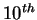

Next: About this document ...
Up: reference
Previous: reference
- 1
- W. Herr and F. Schmidt, ``Using SDDS data sets with
MAD-X'', AB-Note-2006-043 (ABP),
http://cern.ch/Frank.Schmidt/report/sdds1.pdf.
- 2
- P.K. Skowronski, F. Schmidt, R. de Maria and
E. Forest, ``New Developments of MAD-X Using PTC'', paper presented
at the ICAP06 Conference in Chamonix, France,
http://cern.ch/Frank.Schmidt/report/WEPPP12.PDF.
- 3
- R. de Maria, F. Schmidt and P.K Skowronski, ``Advances
in Matching with MAD-X'', paper presented at the ICAP06 Conference
in Chamonix, France,
http://cern.ch/Frank.Schmidt/report/WEPPP14.PDF.
- 4
- E. Forest, Y. Nogiwa and F. Schmidt, ``The FPP
Documentation'', paper presented at the ICAP06 Conference in
Chamonix, France,
http://cern.ch/Frank.Schmidt/report/WEPPP04.PDF.
- 5
- E. Forest, Y. Nogiwa and F. Schmidt, ``The FPP and PTC
libraries'', paper presented at the ICAP06 Conference in Chamonix,
France,
http://cern.ch/Frank.Schmidt/report/MOM1MP02.PDF.
- 6
- F. Zimmermann, ``Intrabeam Scattering with
Non-Ultrarelativistic Corrections and Vertical Dispersion for
MAD-X'', CERN-AB-2006-002,
http://cern.ch/Frank.Schmidt/report/ab-2006-002.pdf.
- 7
- H. Burkhardt, A. Koschik, T. Risselada, F. Schmidt, ``On
The Implementation Of Experimental Solenoids In MAD-X And Their
Effect On Coupling In The LHC'', CERN-LHC-Project-Report-929,
paper presented at the  EPAC Conference in Edinburgh 2006,
http://cern.ch/Frank.Schmidt/report/lhc-project-report-929.pdf.
- 8
- Catia Milardi (INFN/LNF, Frascati (Roma)), Etienne Forest
(KEK, Ibaraki), F. Schmidt (CERN, Geneva, Switzerland), ``MAD-X/PTC
Lattice Design for DAFNE at Frascati, CERN-AB-2006-062, paper
presented at the EPAC Conference in Edinburgh 2006,
http://cern.ch/Frank.Schmidt/report/MOPLS041.pdf
- 9
- E. Forest, S.C. Leemann (KEK, Tsukuba), F. Schmidt,
``Fringe Effects in MAD PART I, Second Order Fringe in MAD-X for the
Module PTC'',
http://cern.ch/Frank.Schmidt/report/fringe_part_I.pdf.
- 10
- E. Forest, S.C. Leemann (KEK, Tsukuba), F. Schmidt,
``Fringe Effects in MAD PART II, Bend Curvature in MAD-X for the
Module PTC'',
http://cern.ch/Frank.Schmidt/report/fringe_II_madx.pdf.
- 11
- F. Schmidt (MAD-X custodian), ``MAD-X PTC
Integration'', paper to be presented at the 2005 PAC Conference in
Knoxville, USA,
http://cern.ch/Frank.Schmidt/report/MPPE012.pdf.
- 12
- E. Forest, ``Nonlinear Stochastic Moment Maps'',
(2005, unpublished),
http://cern.ch/Frank.Schmidt/report/nonlinear_moments.pdf.
- 13
- I.K. Waarum, ``Computation of accelerator aperture
and its application to the LHC'', Bachelor project 2004,
Sør-Trøndelag University College,
http://cern.ch/Frank.Schmidt/report/CAA.pdf.
- 14
- F. Schmidt, ``Mad-X a worthy successor for MAD8?'',
paper presented at the ICAP04 Conference in St. Petersburg, Russia,
http://cern.ch/Frank.Schmidt/report/icap.pdf.
- 15
- W. Herr, ``Simultaneous orbit correction of both LHC
beams in MAD-X using common elements'',
LHC Project Note 346,
http://cern.ch/Frank.Schmidt/report/LHCPN_346.
- 16
- W. Herr, ``Particle tracking with MAD-X including LHC
beam-beam interactions'',
LHC Project Note 344,
http://cern.ch/Frank.Schmidt/report/bb_madx.pdf.
- 17
- E.T. d'Amico, ``SODD: Another MAD-X module'',
CERN AB-NOTE-2004-069 (ABP),
http://cern.ch/Frank.Schmidt/report/sodd_madx.pdf.
- 18
- W. Herr and F. Schmidt, ``A MAD-X Primer'',
CERN-AB-2004-027-ABP,
http://cern.ch/Frank.Schmidt/report/mad_x_primer.pdf.
- 19
- W. Herr, ``New features in the closed orbit
correction procedures in the MAD-X program'',
CERN-AB-NOTE-2003-043-ABP,
http://cern.ch/Frank.Schmidt/report/co_madx.pdf.
- 20
- H. Grote and F. Schmidt, ``MAD-X - An Upgrade from
MAD8'', CERN-AB-2003-024 ABP, paper presented at the 2003 PAC
Conference in Portland, USA,
http://cern.ch/Frank.Schmidt/report/ab-2003-024.pdf.
- 21
- W. Herr, ``Implementation of the new closed orbit
correction procedures in the MAD-X program'',
CERN-SL-2002-48 (AP),
http://cern.ch/Frank.Schmidt/report/sl-2002-048.pdf.
- 22
- E. Forest, E. McIntosh and F. Schmidt, ``Introduction
to the Polymorphic Tracking Code : Fibre bundles, Polymorphic Taylor
Types and "Exact Tracking"'', CERN-SL-2002-044 (AP), KEK Report
2002-3,
http://cern.ch/Frank.Schmidt/report/sl-2002-044.pdf.
- 23
- E. Forest, ``Geometric Integration for Particle Accelerators
'', KEK Preprint 2005-107,
http://cern.ch/Frank.Schmidt/report/geo_integrator.pdf.
- 24
- E. Forest, ``Dispersive Lattice Functions in a 6-D
Pseudo-Harmonic Oscillator'', (1999, unpublished),
http://cern.ch/Frank.Schmidt/report/disp.pdf.
Frank Schmidt
2008-10-09